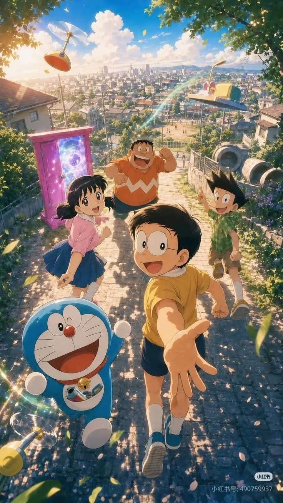

here you will be able to find different cartoons anima, so lets go on this journey together.
Tom and Jerry is an American animated media franchise and series of comedy short films created in 1940 by William Hanna and Joseph Barbera. Best known for its 161 theatrical short films produced by Metro-Goldwyn-Mayer, the series centers on the rivalry between a cat named Tom and a mouse named Jerry.

Doraemon is the titular character of the manga and anime series Doraemon, created by Fujiko Fujio. Doraemon is a male robotic cat that travels back in time from the 22nd century to aid a preteen boy named Nobita Nobi in his daily life.

Assassination Classroom is a popular Japanese manga and anime franchise about a powerful octopus-like creature who teaches a class of underachieving students how to assassinate him

My Hero Academia is a Japanese manga series written and illustrated by Kōhei Horikoshi. It was serialized in Shueisha's shōnen manga magazine Weekly Shōnen Jump from July 2014 to August 2024, with its chapters collected in 42 tankōbon volumes.

A 14-year-old human boy is adopted by a demon and sent to a demon school, where he must hide the fact that he's human or risk being eaten.
| Rank | Cartoon Name | My Rating |
|---|---|---|
| 1 | Tom and Jerry | 10/10 |
| 2 | Doraemon | 9/10 |
| 3 | Assassination Classroom | 9/10 |
| 4 | My Hero Academia | 8/10 |
| 5 | Welcome to Demon School! Iruma-kun | 8/10 |